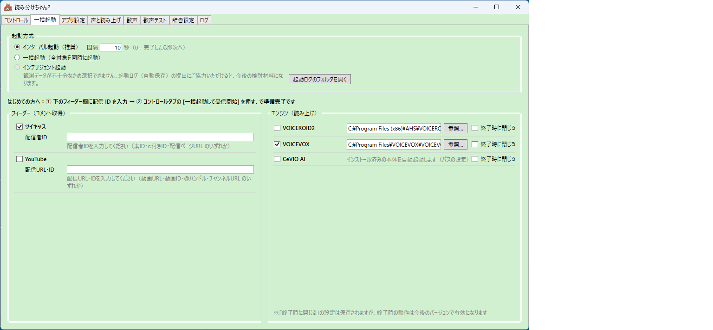
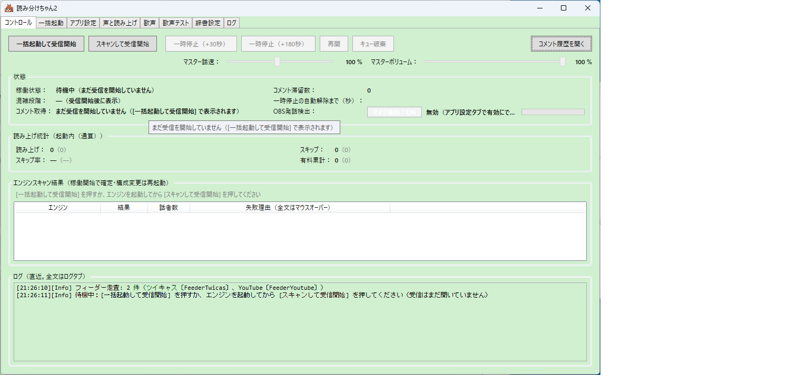
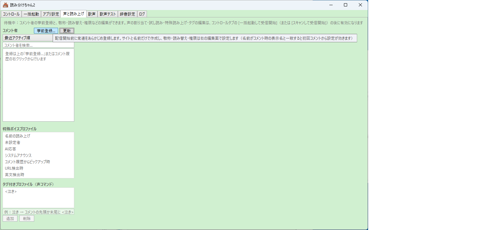
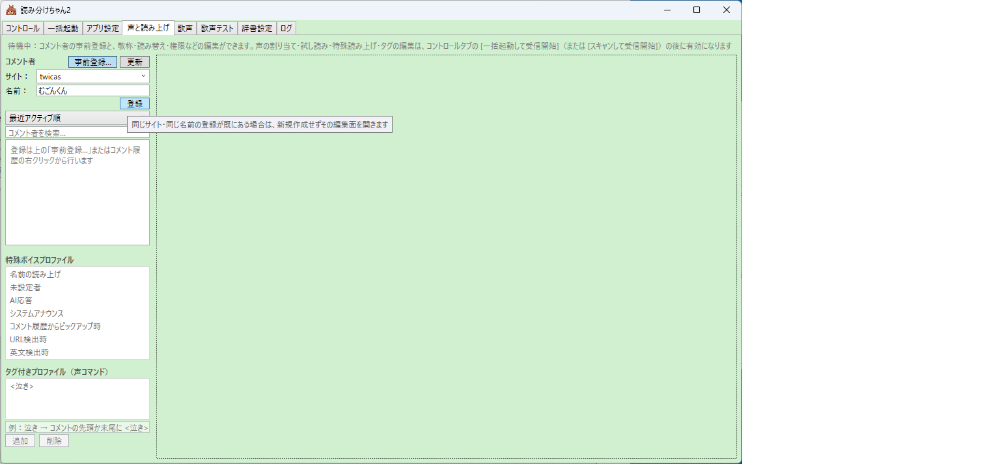

配信で使うまでの手引き
すでにツイキャスなどで配信をしている方向けのガイドです。
このページでは、インストールから最初の配信で使うまでを順に案内します。 途中でつまずいたら、遠慮なく X @yomiwakechan まで。 テスター版なので「分かりにくかった」という報告そのものが宝です。
1. インストール
- VOICEVOX を入れておく（お勧め・無料）
多彩な声とお歌機能をフルに使うには、無料の音声合成ソフト VOICEVOX をお勧めします。 後から入れても構いません（何も入れなくても Windows 標準音声で最低限動きます）。 VOICEROID2 / CeVIO AI をお持ちの方はそれも使えます。 - インストーラをダウンロード
最新版のダウンロードはこちら （yomiwakechan2-setup-v2.00.exe）。 - インストーラを実行
「Windows によって PC が保護されました」の青い画面が出たら、 「詳細情報」→「実行」で進めてください （この警告について詳しく）。 管理者権限は不要で、完了するとデスクトップに「読み分けちゃん2」アイコンができます。
💡 設定はアップデートしても消えません
設定・履歴・リスナーの台帳は
%LOCALAPPDATA%\yomiwakechan2\ などに保存され、
上書きインストールやアンインストールでは消えません。新しい版に入れ替えても、
育てた設定はそのまま引き継がれます。
2. 最初にやること（ツイキャス配信者向け）
- 読み分けちゃん2 を起動する
初回はかならず「一括起動」タブが開きます。ここが準備の起点です。 画面の上部に「はじめての方へ」の道しるべが表示されています。 - フィーダー欄に配信 ID を入力する
「ツイキャス」にチェックを入れ、配信者 ID を入力します （表 ID・c: 付き ID・配信ページの URL、どれを貼っても OK です）。
右のエンジン欄で、使う音声エンジン（VOICEVOX など）にチェックが入っていることも確認します。
※ YouTube で使う場合は「YouTube」にチェックして、動画 URL・動画 ID・@ハンドル・ チャンネル URL のいずれかを入力します。
一括起動タブ。左がコメント取得（フィーダー）、右が音声エンジン。 上の「はじめての方へ」の一行が道しるべ - コントロールタブの「一括起動して受信開始」を押す
音声エンジンとコメント取得プログラム（feeder）が、ボタン一つでまとめて立ち上がります。 ログに「準備完了」と出て、エンジンスキャン結果に使える声の一覧が並べば成功です。
※ feeder の初回起動時にも Windows の警告やファイアウォールの確認が出ることがあります。 許可して進めてください。
コントロールタブ（待機中）。左上の「一括起動して受信開始」が本番のスイッチ - テストコメントで動作確認
配信を開始し、自分のスマホなどからコメントを送ってみてください。 コメントが声になって聞こえたら、準備完了です。稼働中は状態・統計・ログが動き始めます。
稼働中のコントロールタブ。読み上げ・スキップ・有料累計などの統計、 エンジンごとの話者数、OBS 発話検出の状態がひと目で分かる
3. 配信前に常連さんを登録する（事前登録）
読み分けちゃん2 の中心は「リスナーごとの読み分け」。 常連さんをあらかじめ登録しておくと、初回の配信からいきなり本領を発揮できます。 配信を始める前（待機中）でも登録できます。
- 「声と読み上げ」タブを開く
コメント者一覧の上にある「事前登録…」ボタンを押します。
「声と読み上げ」タブ。コメント者の左上に「事前登録…」がある - サイトと名前を入力して登録
サイト（twicasなど）を選び、常連さんの名前を入力して「登録」。
※ 名前はコメント時の表示名と一致させてください。一致していると、 その人の初回コメントから設定が効きます。同じサイト・同じ名前の登録が既にある場合は、 新規作成せずその編集画面が開きます。
サイトと名前だけで作成できる。細かい設定は次の編集画面で - 編集画面で敬称・読み替えなどを設定
登録するとそのまま編集画面が開きます。「〜さん／〜ちゃん」などの敬称、名前の読み替え、 優先度（1〜10）、声コマンド・歌コマンドの許可は配信前でも設定できます。
コメント者の編集画面。優先度 10 は有料アイテムと同等＝混雑時も必ず読まれる - 声の割り当ては一括起動のあとで
待機中は声の欄が「使用不可」表示になりますが、これはエンジンがまだ起動していないだけ （設定は保持されます）。一括起動のあとに開き直すと声を選べるので、 試し読みで聞き比べながら、その人らしい声を選んでください。
💡 配信中に来た人は履歴から登録
配信中に新しく来てくれた人は、履歴の行を右クリックしてその場で登録できます。
登録すると、それまでのセッション中の累積も引き継がれます。
4. OBS 連携（マイク検出）の設定
自分がマイクで話している間、読み上げが待ってくれる機能です。 自分の声と読み上げの「声かぶり」を防ぎます。OBS で配信している方にお勧めです。
※ この機能はオプションです（既定 OFF）。OBS を使っていない方は飛ばして構いません。
OBS 側の準備
- WebSocket サーバーを有効にする
OBS のメニュー「ツール」→「WebSocket サーバー設定」を開き、 「WebSocket サーバーを有効にする」にチェックを入れます。 - 接続情報を控える
同じ画面の「接続情報を表示」を押すと、ポート番号とパスワードが確認できます。 パスワードをコピーしておきます。 - マイクにノイズゲートを入れる（推奨）
マイク音源の「フィルタ」にノイズゲートを追加しておくと、検出の精度が上がります。 読み分けちゃん2 はフィルタ通過後の音量で「話している」を判定するので、 感度の調整（しきい値）は OBS のノイズゲート側で行ってください。
読み分けちゃん2 側の設定
- 「アプリ設定」タブで OBS 発話検出を有効にする
機能を有効にし、ホスト・ポート・パスワード（さきほど控えたもの）を入力します。 - 遅延を好みに合わせる
リリース遅延＝話し終えてから読み上げが再開するまでの間（既定 2 秒）、 アタック遅延＝話し始めてから読み上げが止まるまでの間（既定 0 秒）。 まずは既定のままで大丈夫です。 - 稼働中はコントロールタブでオン・オフ
コントロールタブの「マイク検出」トグルで、その場で切り替えられます。 つながっていれば、状態欄に「OBS 発話検出：接続済み（監視中）」と表示されます。
💡 挙動のポイント
- 読み上げの途中でぶつ切りにはなりません。いま読んでいる 1 件は最後まで読み切り、 次のコメントから待ちます。
- OBS を後から起動しても、自動でつながります。
- OBS の設定を読み分けちゃん2 が書き換えることはありません。
おまけ：履歴ウィンドウを配信画面に載せる
読み上げ履歴は別ウィンドウで表示でき、罫線をオフにしたフラットな見た目にもできます。 OBS のウィンドウキャプチャで配信画面に載せれば、コメント表示としても使えます。
※ 既知の事象：OBS のウィンドウキャプチャは、アプリを再起動するとキャプチャが 外れることがあります。外れたら OBS 側でソースのウィンドウを選び直してください。
5. まだ発展途上の項目
β 版として、正直にお伝えしておきます。以下は把握済みで、順に育てているところです。 「ここで困った」の報告は大歓迎です。
- YouTube のコメント取得は生まれたてです。ツイキャスに比べてテストの蓄積が浅いため、 取得まわりで不自然な挙動があればぜひ教えてください。
- 長い歌はコメントの文字数上限で途切れます。いまは譜面を分けて送る必要があります。 複数コメントをつなげて歌う仕組みは設計中です。
- メンバーシップは把握・表示まで。未登録のリスナーの優先度への自動反映は、まだ検討中です （登録済みのリスナーは優先度で守れます）。
- CeVIO は AI 版に対応。CeVIO CS への対応は今後の課題です。
- まれに、終了時にウィンドウが残ることがあります。再現条件を調査中です。 残ってしまったらタスクマネージャーから終了してください。
- AI 応答機能は準備中です。
6. 困ったら・気づいたら
動かない・分かりにくい・こうだったら嬉しい——どんなことでも、 X @yomiwakechan へお寄せください。 配信で直接伝えてもらうのも大歓迎です。
報告の際、差し支えなければ以下があると助かります：
- 何をしたら・何が起きたか（起きた時刻もあると助かります）
- お使いの音声エンジン（VOICEVOX / VOICEROID2 / CeVIO AI / Windows 標準）
- 画面の表示やログのスクリーンショット